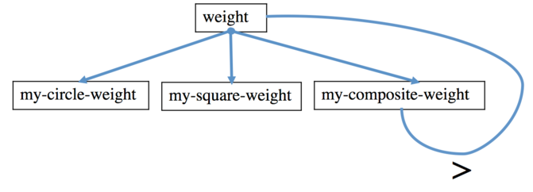

Call Graph for weight

HALTING MEASURE: total number of shapes in the shape
(number of circles plus number of squares plus number of composites)
The halting measure decreases at the recursive call, as illustrated.